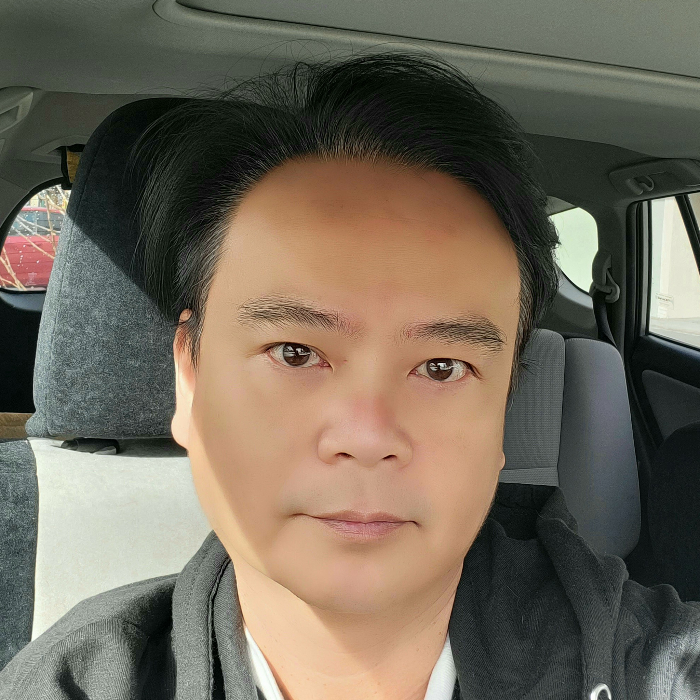

Linh Thuong Nguyen

Program Management • Leadership • Project Workflow Optimization • analytical Problem-Solving • Agile Methodologies • Tactical Planning & Execution • Technical Process Improvement • Team & Stakeholder Management skills • Budget Management • Interpersonal Communication
Key Qualifcations
-
Mentoring and coaching team members to reach their highest potential with advancement in their career and personal goals while guiding stakeholders to achieve maximum return on their investment
-
Experienced leadership focusing on empathy with stakeholders to solve problems while increasing collaboration with the ability to roll up the sleeves as needed
-
Successful track record in supervising and leading productive teams to achieve project and program goals to meet overall organization objectives
-
Accomplished project and program portfolio management professional with +15 years of extensive experience in program and project planning and execution
Education
-
Executive MBA - 2005
California State University of Hayward
-
Culinary Arts Program - 1995
California Culinary Academy
Associate of Occupational Studies and culinary certificate
-
B.S. Business Computer Telecommunications - 1993
California State University of Hayward
Work Experience
Wikimedia Foundation- Senior Business Partner Manager
(2018 to present)
A nonprofit entity that provides the essential infrastructure for free knowledge. The Foundation hosts Wikipedia, the free online encyclopedia, created, edited, and verified by volunteers worldwide, and many other vital community projects.
Results:
- Strategized and advised CPO and CTO on strategies and managed the implementation to align the two departments with each other and their OKRs
Communicated and Maintained cross-functional goals and projects through open communication with a global and diverse of engineers, managers, and directors to achieve yearly OKRs
- Worked with CTO and CPO to define OKRs, using qualitative and quantitative data analysis, for the Technology department and Product department to ensure OKRs are aligned, managed, and measured across departments
- Contact point for external volunteer communities and stakeholders to the Product and Technology Departments to develop a closer relationship
Planned, organized, and led the team in organizing annual all-hands events for 750 staff, Wikimania events, and Wikimedia Global Hackathon.
- Led team to create a Diversity, Equity, and Inclusion (DEI) strategy for the Technology and Product department. The results of implementing the DEI made diverse teams in terms of locations, ethnicities and social backgrounds, and identities
- Fostered a safe to-share environment by celebrating the commonalities and differences through team building projects, learning and understanding cultures and individuals' communication process
- Created an intranet with javascript, python, SQL, and WordPress to improve processes to simplify, align and collaborate on projects and goals between multiple teams and departments
Wikimedia Foundation- Senior Program Manager
(2015 to 2017)
Results:
- Managed weekly Department meetings
- Planned and implemented yearly All-hand global weekly long meetings
- Introduced a hybrid of Agile and Waterfall methodology to create better workflows
- Led a team of 8 project and product managers between the Technology and Product department
- Unified communications and documentation between departments.
- Implemented qualitative and quantitative measurements to assess the wiki community’s needs and wants to focus on product development and improvement.
- Created a more precise line of communication between the foundation and the supporting community through wiki ambassadors and structured communications processes
Skills
Full-Stack Web and Mobile Development:
- Python, JavaScript, CSS, HTML, React, NodeJS
- React Native, MongoDB, Express, Java, VueJS
- Postman, GitHub, GitLab
Soft Tools:
- Google Workspace, Words, Excel, PowerPoint
- MS Project, Sharepoint, Visio, Jira
- Photoshop, Illustrator, Visual Basic, Mural
- Miro, Asana, Slack, Zapier, Zoom
- Coupa, Betterworks, Greenhouse, WordPress
Awards & Certifications
- PMP certification 2020
- Professional Scrum Master Certification 2018
- Full-Stack Web and Mobile Development Certification 2019
- Award: Excutive MBA Leadership of the Year
Other